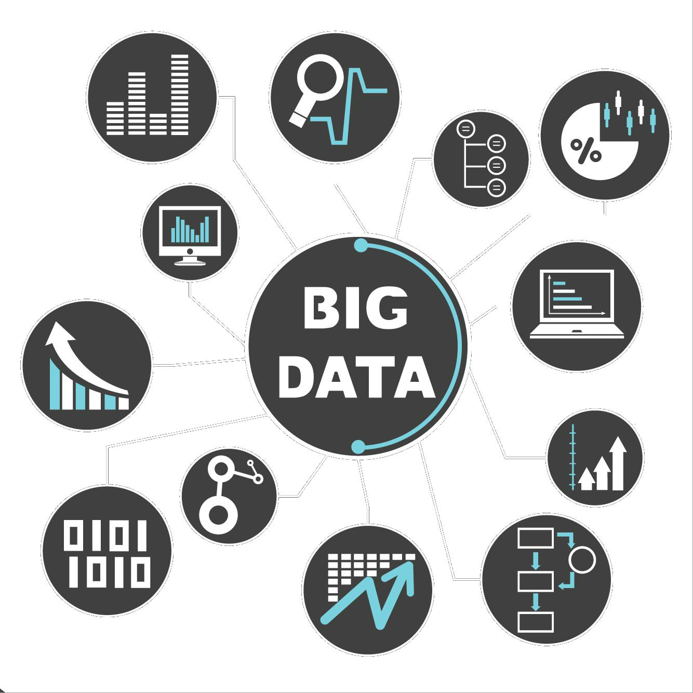
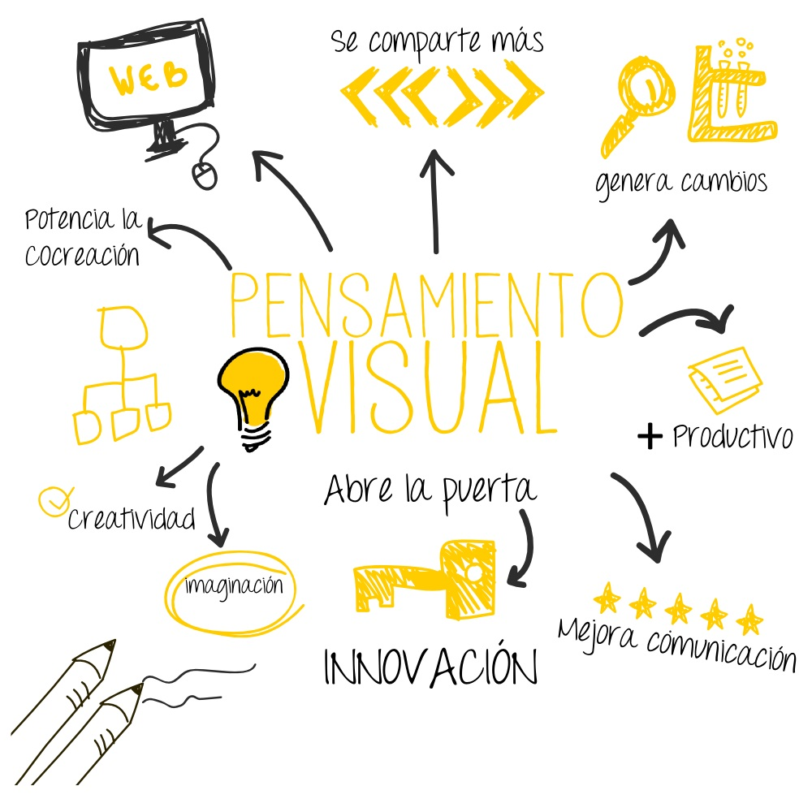

El Pensamiento Visual ha ganado gran relevancia dada su eficacia en el manejo, exploracion y procesamiento de grandes sets de datos (Big Data), asi como en dar visibilidad a elementos intangibles como emociones y comportamientos. Los medios visuales por su parte, permiten la manifestacion visual de modelos y experimentos ideados por un ingeniero, favoreciendo la negociacion de ideas entre grupos de diversas areas disciplinarias. A pesar de la importancia que se le ha dado disciplinariamente al razonamiento matematico/linguistico, hoy, la introduccion de nuevas tecnologias y las redes sociales, han hecho que el alfabetismo visual aumente. En este contexto, el pensamiento visual se ha transformado en una herramienta critica para la creacion y propagacion del conocimiento de manera transversal desde la ingenieria para todas las disciplinas. Por medio de este curso se podran abordar las teorias e ideas que sustentan el pensamiento visual para la Ingenieria y las Ciencias, asi como las metodologias e implementacion practica de los conocimientos adquiridos.

Este curso esta sub-dividido en 3 fases:
Fase 1: Individual - Recoleccion de Datos
Fase 2: Grupal - Modelamiento 2D
Fase 3: Grupal - Modelamiento 3D
Al final del curso se espera que el alumno pueda:
Seleccionar, aplicar y adaptar metodos y tecnologias de visualizacion de datos abordados en clases.
Idear, planifica, programar y construir disenos creativos que desplieguen contenido vidual.
Discutir y opinar acerca de las teorias, metodos y herramientas que sustentan el razonamiento detras de la visualizacion.